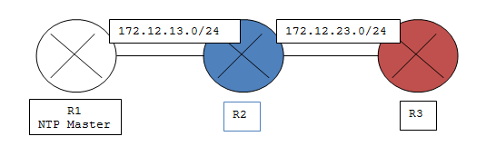
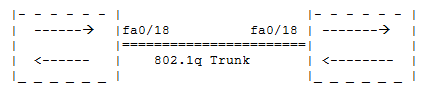
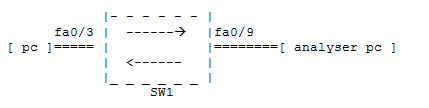
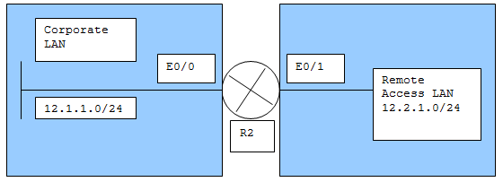

CLI Quick Reference
AAA - Authentication
#authentication using the local database
R1(config)#aaa new-model
R1(config)#username Bart password cisco
R1(config)#aaa authentication login default local
#or
#authentication using a radius server – with a key of ‘testing1234’
R1(config)#aaa new-model
R1(config)#radius-server host 192.168.12.3 single connection
R1(config)#radius-server key tesing1234
R1(config)#username Homer password cisco
R1(config)#aaa authentication login default group radius local
AAA - Authorization
#authorization examples
R1(config)#aaa authorization commands 15 default local
R1(config)#aaa authorization network Bart local
R1(config)#aaa authorization exec Lisa if-authenticated
AAA - Accounting
#accounting for all commands at level 15 sending a start notice at the
beginning and a stop notice at the end of a process
R1(config)#aaa accounting commands 15 default start-stop group radius
R1(config)#aaa accounting exec default start-stop group radius
NTP Configuration

R1#clock set 10:34:00 23 April 2011-12-08
R1#conf t
R1(config)#clock timezone EST -5
R1(config)#clock summer-time EST recurring
R1(config)#ntp master
R1(config)#ntp update-calendar
R1(config)#ntp authentication-key 1 md5 CCNP
R1(config)#ntp authenticate
R1(config)#ntp trusted-key 1
R2(config)#ntp server 172.12.13.1 key 1 source Fa0/0 prefer
R2(config)#ntp authentication-key 1 md5 CCNP
R2(config)#ntp peer 172.12.23.3
R2(config)#end
R2#
R3(config)#ntp peer 172.12.23.2
R3(config)#end
R3#
Configuring Privilege Levels
# The debug command is set to privilege level 5
R1(config)#privilege exec level 5 debug
R1(config)#enable secret level 5 L3tm3In
R1(config)#end
# To test this setting
R1#disable
R1>enable 5
Password:
R1#show privilege
Current privilege level is 5
R1#
Creating CLI Views
R1#conf t
R1(config)#enable secret MyH@rdP@55w0rd
R1(config)#aaa new-model
R1(config)#exit
R1#enable view
Password: <MyH@rdP@55w0rd>
R1#PARSER-6-VIEW_SWITCH: Successfully set to view ‘root’.
R1#conf t
R1(config)#parser view HELPDESK
R1#PARSER-6-VIEW_CREATED: view ‘HELPDESK’ successfully created
R1(config-view)#secret 0 H3lpD35k
R1(config-view)#commands exec include all copy
R1(config-view)#commands exec include traceroute
R1(config-view)#commands exec include ping
R1(config)#end
# To test this setting
R1#enable view HELPDESK
Password:
R1#PARSER-6-VIEW_SWITCH: Successfully set to view ‘HELPDESK’.
R1#?
Exec commands:
copy Copy from one file to another
ping Send echo messages
traceroute Trace route to destination
Enhanced Support For Virtual Logins
R1#conf t
R1(config)#ip access-list standard PERMIT-ADMIN
R1(config-std-nacl)#remark Permit Only Administrative Hosts
R1(config-std-nacl)#permit 192.168.10.10
R1(config-std-nacl)#permit 192.168.10.11
R1(config-std-nacl)#exit
R1(config)#login block-for 15 attempts 5 within 60
R1(config)#login quiet-mode access-class PERMIT_ADMIN
R1(config)#login delay 10
R1(config)#login on-success log
R1(config)#login on-failure log
R1(config)#username ADMIN secret cisco12345
R1(config)#line vty 0 4
R1(config-line)#login local
R1(config-line)#privilege level 15
R1(config-line)#exit
IPSec - IKE Phase One - The Policy
R1(config)#crypto isakmp policy 100
R1(config-isakmp)#authentication pre-share
R1(config-isakmp)#hash md5
R1(config-isakmp)#encryption 3des
R1(config-isakmp)#group 5
R1(config-isakmp)#exit
R1(config)#crypto isakmp key CCNP address 10.1.1.2
IPSec - IKE Phase Two - The Transform Set
R1(config)#crypto ipsec transform-set R1_TRANSF_SET ah-md5-hmac
R1(cfg-crypto-trans)#exit
R1(config)#access-list 101 permit ip 192.168.105.0 0.0.0.255 192.168.3.0 0.0.0.255
R1(config)#crypto map CCNP 100 ipsec-isakmp
% NOTE: This new crypto map will remain disabled until a peer and
a valid access list have been configured.
R1(config-crypto-map)#match address 101
R1(config-crypto-map)#set peer 10.1.1.2
R1(config-crypto-map)#set transform-set R1_TRANSF_SET
R1(config-crypto-map)#exit
R1(config)#interface s0/0/0
R1(config-if)#crypto map CCNP
R1(config-if)#
Enabling SSH
R1(config)#ip domain-name cisco.com
R1(config)#crypto key zeroize rsa
R1(config)#crypto key generate rsa general-keys modulus 1024
R1(config)#ip ssh time-out 120
R1(config)#ip ssh authentication-retries 4
R1(config)#line vty 0 4
R1(config-line)#transport input ssh
R1(config-line)#privilege level 15
R1(config-line)#login authentication default
R1(config-line)#end
R1(config)#show crypto key mypubkey rsa
Defence Against VLAN Hopping

SW1(config)#interface fa0/1 - 24
SW1(config-if)#switchport mode access
SW1(config-if)#exit
# prevent rogue switch connection – disable DTP on trunk ports
SW1(config)#interface fa0/18
SW1(config-if)#switchport mode trunk
SW1(config-if)#switchport nonegotiate
# change the native vlan to an unused vlan (400) –
remember, native vlan must match on both sides
SW1(config-if)#switchport trunk native vlan 400
Defence Against STP Attacks
# on every port that is not a root port, turn on root guard.
SW1(config)#interface fa0/1
SW1(config-if)#spanning-tree guard root
# on port’s that are configured for port fast, we should not receive BPDUs
# therefore, turn on bpduguard.
SW1(config)#interface fa0/2
SW1(config-if)#spanning-tree portfast bpduguard
SW1(config-if)#end
SW1#
Defence Against DHCP Spoofing
# prevent rogue DHCP offers on the network by turning on dhcp snooping.
# After enabling, every port is considered untrusted.
SW1(config)#ip dhcp snooping
# alternatively, you can configure specific vlans.
SW1(config)#ip dhcp snooping vlan 12, 100, 200-215
# now specific switch ports can be configured as trusted ports.
SW1(config)#interface fa0/4
SW1(config-if)#ip dhcp snooping trust
Defence Against ARP Spoofing - (DAI) Dynamic Arp Inspection
# ARP replies are allowed into the switch on trusted ports,
however, if an ARP reply enters on an untrusted port,
it is compared by the Switch with the DHCP Binding table,
if it is not found in this table then it is dropped,
and the port is disabled. So let’s inspect the ARPs.
# the first step is to enable DAI for one or more VLANs.
SW1(config)#ip arp inspection vlan 100
# how hard was that?
# now specify your trusted ports.
SW1(config)#interface range fa0/1 – 12
SW1(config-if)#ip arp inspection trust
Switchport Analyzer - SPAN - Inspecting Your Own Traffic

#configuring a SPAN port residing on the same switch as the destination port.
SW1(config)#monitor session 1 source interface fa0/3
SW1(config)#monitor session 1 destination interface fa0/9
Remote Switch Port Analyzer - RSPAN - Inspecting Your Own Traffic
#Traffic to be monitored is on one switch and the analyser on another switch.
#Both switches need to be configured for RSPAN.
#The switch connected to the PC will need to send mirrored frames across the trunk.
#A separate VLAN will be created that will carry only mirrored frames
SW1(config)#monitor session 1 source remote vlan 30
SW1(config)#monitor session 1 destination interface fa0/10
SW2(config)#vlan 30
SW2(config-vlan)#remote-span
SW2(config-vlan)#exit
SW2(config)#monitor session 1 source interface range fa0/1 – 3
SW2(config)#monitor session 1 destination remote vlan 30 reflector-port fa0/12
Enforcing Security With VACLs
#configuring a VACL
#an ACL is applied within a VLAN (VACL) –
#this example permits Telnet traffic to 10.1.1.2 while denying all other traffic.
#notice that a vlan access-map name ALLOWTELNET is told to match access list 100.
#when it finds a match under “sequence 10” it is to forward that traffic.
#NOTE: All other traffic is dropped because of a default implicit drop.
SW1(config)#access-list 100 permit tcp any host 10.1.1.2 eq telnet
SW1(config)#vlan access-map ALLOWTELNET 10
SW1(config-access-map)#match ip address 100
SW1(config-access-map)#action forward
SW1(config-access-map)#exit
#finally, the VLAN filter (VACL) is applied to VLANs in the range 1 to 100
SW1(config)#vlan filter ALLOWTELNET vlan-list 1-100
Defence Against MAC Address Spoofing - Port Security
#comprehensive port security configuration.
#1. Enter interface configuration.
#2. Prevent the port from forming a trunk.
#3. Enable port security.
#4. Increase number of learned MACs to 5 ( default is 1 ).
#5. Select violation method of “protect” ( default is – shutdown ).
#6. Train the switch about an available MAC address ( A3D2.F88C.3B9B ).
#7. Cause learned MAC addresses to be dynamically entered into RAM,
thus mitigating MAC Address Spoofing.
SW1(config)#interface fa0/5
SW1(config-if)#switchport mode access
SW1(config-if)#switchport port-security
SW1(config-if)#switchport port-security maximum 5
SW1(config-if)#switchport port-security violation protect
SW1(config-if)#switchport port-security mac-address A3D2.F88C.3B9B
SW1(config-if)#switchport port-security mac-address sticky
SW1(config-if)#end
SW1#show port-security
SW1#show port-security address
SW1#show port-security interface fa0/5
CBAC Configuration - Context Based Access Control
#1. Pick an interface – internal or external.
#2. Configure IP ACLs at the interface.
#3. Define inspection rules.
#4. Apply an inspection rule to an interface.
R1(config)#access-list 101
R1(config-nacl)#permit tcp 10.10.10.0 0.0.0.255 any
R1(config-nacl)#permit udp 10.10.10.0 0.0.0.255 any
R1(config-nacl)#permit icmp 10.10.10.0 0.0.0.255 any
R1(config-nacl)#deny ip any any
R1(config-nacl)#exit
R1(config)#ip inspect name MYSITE tcp
R1(config)#ip inspect name MYSITE udp
R1(config)#ip inspect name MYSITE icmp
R1(config)#interface fa0/0
R1(config-if)#ip access-group 101 in
R1(config-if)#ip inspect MYSITE in
Zone Based Policy Firewall - IOS Stateful Packet Inspection
#1. Create the zones – zone security command.
#2. Define traffic classes – class-map type inspect command.
#3. Specify firewall policies – policy-map type inspect command.
#4. Apply firewall policies to pairs of zones – zone-pair security command.
#5. Assign router interfaces to zones – zone-member security interface command.
#1. Create the zones – zone security command.
FW(config)#zone security Inside
FW(config-sec_zone)#description Inside Network
FW(config-sec-zone)#exit
FW(config)#zone security Outside
FW(config-sec-zone)#description Outside Network
FW(config-sec-zone)#exit
#2. Define traffic classes – class-map type inspect command.
FW(config)#access-list 101 permit ip 10.0.0.0 0.0.0.255 any
FW(config)#class-map type inspect INSIDE_HOSTS
FW(config-cmap)#match access-group 101
FW(config-cmap)#exit
#3. Specify firewall policies – policy-map type inspect command.
FW(config)#policy-map type inspect InsideToOutside
FW(config-pmap)#class type inspect INSIDE_HOSTS
FW(config-pmap-c)#inpsect
%No specific protocol configured in class INSIDE_HOSTS for inspection.
All protocols will be inspected
FW(config-pmap-c)#exit
FW(config-pmap)#exit
#4. Apply firewall policies to pairs of zones – zone-pair security command.
FW(config)#zone-pair security InsideToOutside source Inside destination Outside
FW(config-sec-zone-pair)#description Internet Access
FW(config-sec-zone-pair)#service-policy type inspect InsideToOutside
#5. Assign router interfaces to zones – zone-member security interface command.
FW(config-sec-zone-pair)#interface fa0/0
FW(config-if)#zone-member security Inside
FW(config-if)#interface s0/0/0
FW(config-if)#zone-member security Outside
#After generating some traffic
FW#show policy-map type inspect zone-pair session
NOTES: The default policy between zones in to deny all.
If no policy is explicitly configured, all traffic moving between zones is blocked.
This is a significant departure from the CBAC model in which traffic was implicitly
allowed until it was explicitly blocked with an ACL.
IP Spoofing - Prevention Using ACLs
#In order to mitigate IP address spoofing, do not allow any IP packets containing the source address of any internal hosts or networks inbound to a private network.

R2(config)#access-list 150 deny ip 12.1.1.0 0.0.0.255 any log
R2(config)#access-list 150 deny ip 127.0.0.0 0.255.255.255 any log
R2(config)#access-list 150 deny ip 0.0.0.0 0.255.255.255 any log
R2(config)#access-list 150 deny ip 12.0.0.0 0.255.255.255 any log
R2(config)#access-list 150 deny ip 172.16.0.0 0.15.255.255 any log
R2(config)#access-list 150 deny ip 224.0.0.0 15.255.255.255 any log
R2(config)#access-list 150 deny ip host 255.255.255.255 any log
R2(config)#access-list 150 permit ip any 12.1.1.0 0.0.0.255
R2(config)#interface e0/1
R2(config-if)#ip access-group 150 in
R2(config-if)#exit
#Also, you should not allow any outbound IP packets with a source
address other than a valid IP address of the internal network.
R2(config)#access-list 151 permit ip 12.1.1.0 0.0.0.255 any
R2(config)#access-list 151 deny ip any any log
R2(config)#interface e0/1
R2(config-if)#ip access-group 151 in
R2(config-if)#exit
#One favourite of hackers are ICMP echo’s.
They use these to discover subnets and hosts on the protected network
as well as generate DoS attacks.
They can use the ICMP redirect messages to alter host routing tables.
Because hackers can use both ICMP echo and redirect messages maliciously,
the router should block them inbound.
R2(config)#access-list 152 deny icmp any any echo log
R2(config)#access-list 152 deny icmp any any redirect log
R2(config)#access-list 152 deny icmp any any mask-request log
R2(config)#access-list 152 permit icmp any 12.1.1.0 0.0.0.255
R2(config)#interface e0/0
R2(config-if)#ip access-group 152 in
R2(config-if)#exit
#The following ICMP messages are required for proper network operation;
they should be allowed outbound.
*echo allows users to ping external hosts
*parameter problem tells the host about packet header problems.
*packet too big is required for packet maximum transmission unit (MTU) discovery.
*source quench throttles down traffic as needed.
#As a best practice, all other ICMP should be blocked outbound.
R2(config)#access-list 153 permit icmp 12.2.1.0 0.0.0.255 any echo
R2(config)#access-list 153 permit icmp 12.2.1.0 0.0.0.255 any parameter-problem
R2(config)#access-list 153 permit icmp 12.2.1.0 0.0.0.255 any packet-too-big
R2(config)#access-list 153 permit icmp 12.2.1.0 0.0.0.255 any source-quench
R2(config)#access-list 153 deny icmp any any log
R2(config)#interface e0/1
R2(config-if)#ip access-group 153 out
R2(config-if)#exit